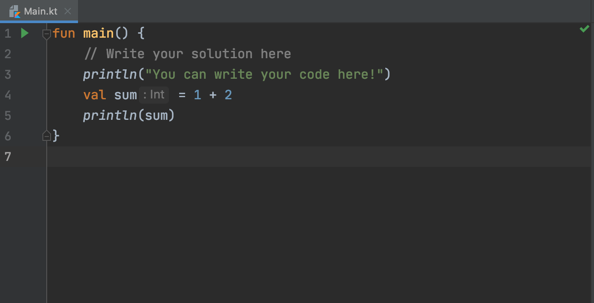
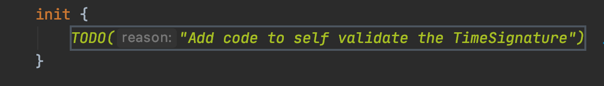

Editor is the middle bar/window available in the Intellij window.
This is the place where you will write your solutions for the incoming challenges. Majority of the tasks are verified using test written in JUnit 5 library and Kotlin. Rest of the task are just not verified, as they have just the informational purpose. 
Some of the code will be provided for you and you will be expected to fill the code in special places that you will see as in the picture below. 
To run the code, just click the Run from the context menu or press combination of ⌃R in MacOS or Ctrl + R in Windows.